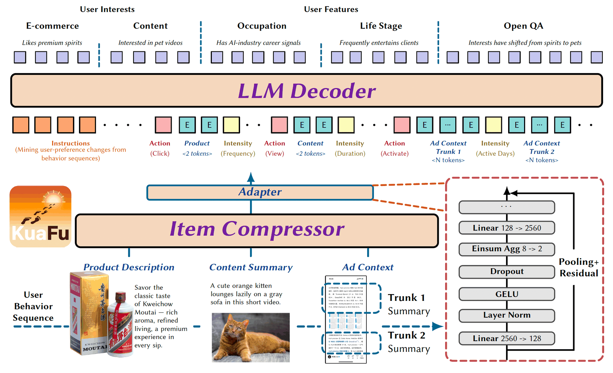

KuaFu: Compressing Long User Behavior into Understanding at Billion
Scale
Preprint, 2026 · arXiv:2609.31045 · cs.IR, cs.CL, cs.LG

KuaFu is a unified behavior-compression layer that represents each item using 2–4 compact tokens. It matches or exceeds uncompressed production models on five headline metrics, increases per-GPU throughput by 37%–350%, and saves 190 GPUs. Its deployment on Tencent's advertising and recommendation platform lifted overall GMV by 1.37%.